01 Sala e jantar
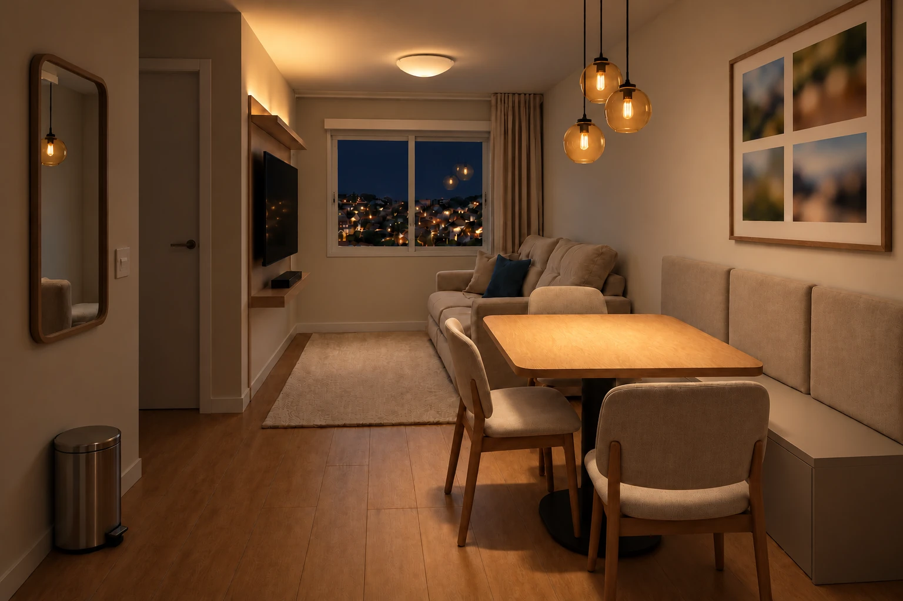
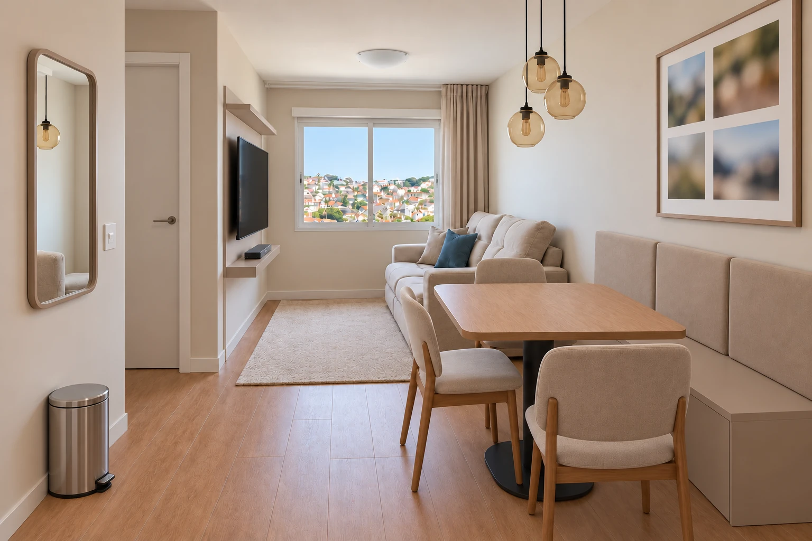
- Arenza liso
- Suede Areia
- Vinílico Olmo
- Algodão Egípcio
Arenza liso, suede areia e piso em tom mel.
Jabuticaba sobre a mesa; Jurerê suave e indireta sobre a TV.
Imagens ilustrativas de aparência; medidas nas plantas e fichas.
Arraste o controle de cada ambiente. Use as setas do teclado para comparar com precisão.


Arenza liso, suede areia e piso em tom mel.
Jabuticaba sobre a mesa; Jurerê suave e indireta sobre a TV.
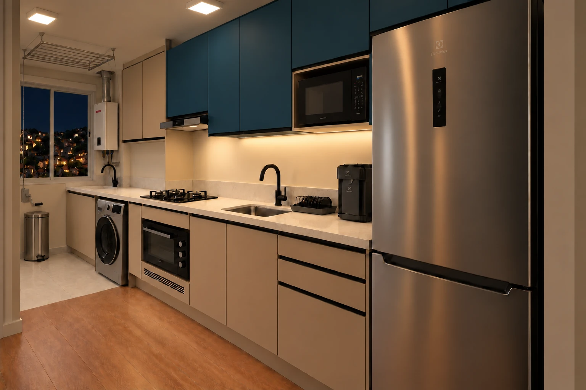
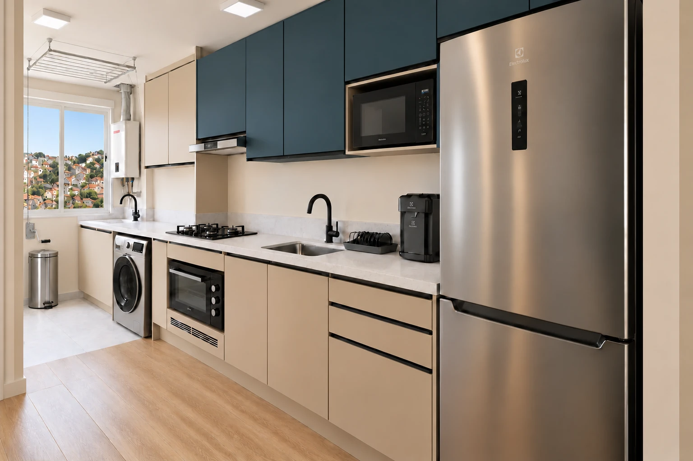
Azul Petróleo fechado, Arenza e Branco Itaúnas.
Plafon e luz de bancada sob os aéreos, aproximadamente 3000 K.
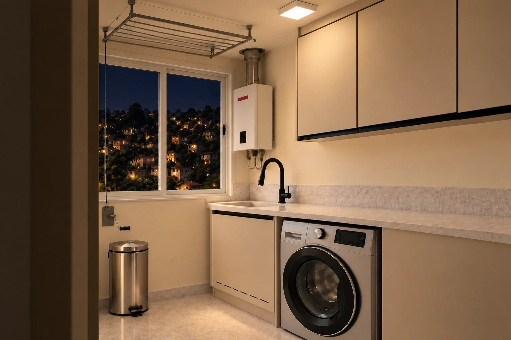
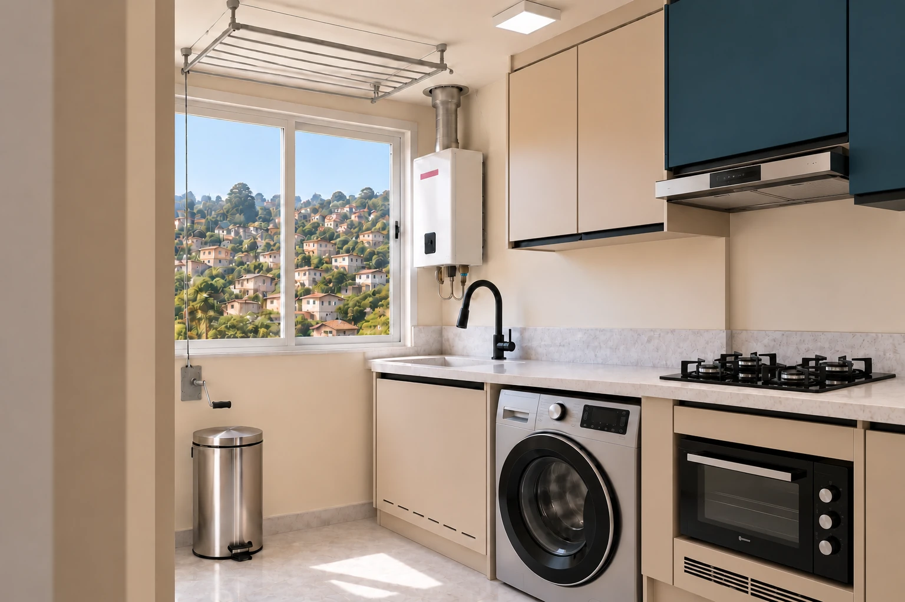
Arenza liso, pedra clara e cerâmica no piso.
Plafon como única fonte, aproximadamente 3000 K.
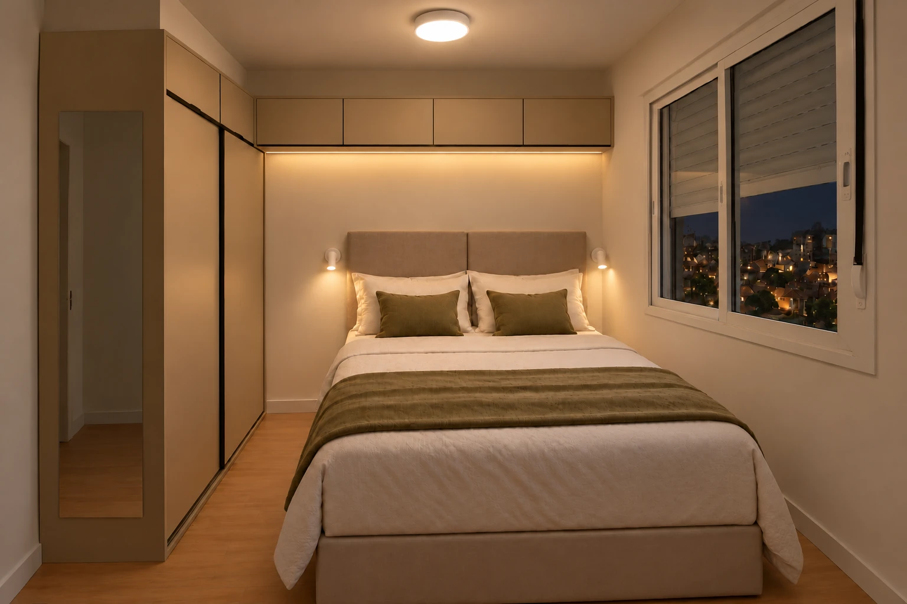
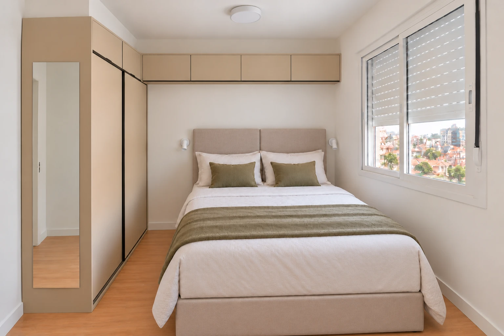
Arenza e suede areia; queen com baú no cenário futuro.
Plafon Elgin, indireta sob o aéreo e duas arandelas, ~3000 K.
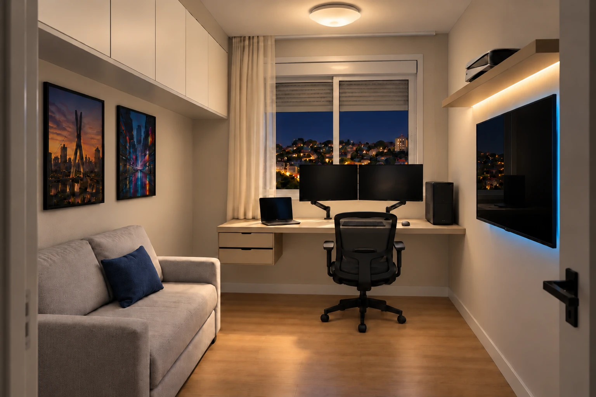
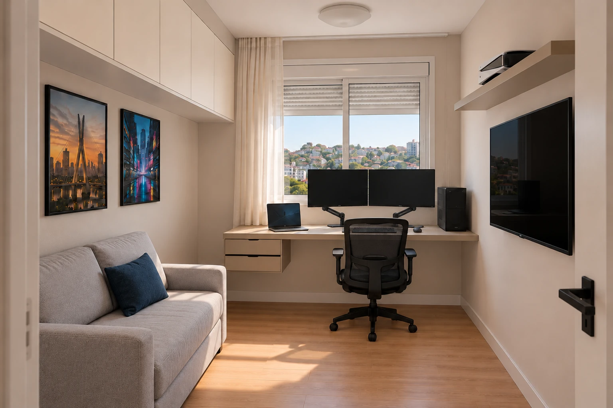
Aéreo Marfim O2, Arenza e sofá Daiane cinza-claro.
Geral ~3000 K; indireta nos consoles e leve azul atrás da TV.
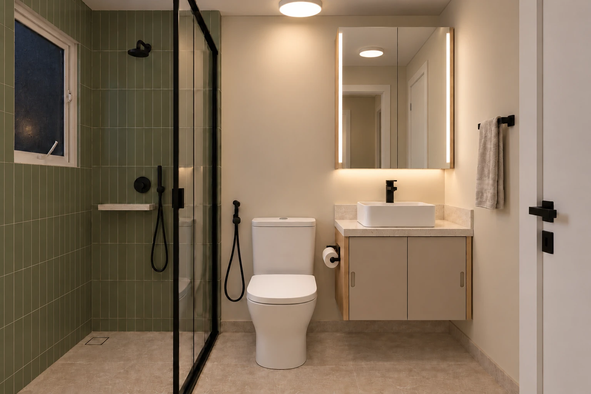
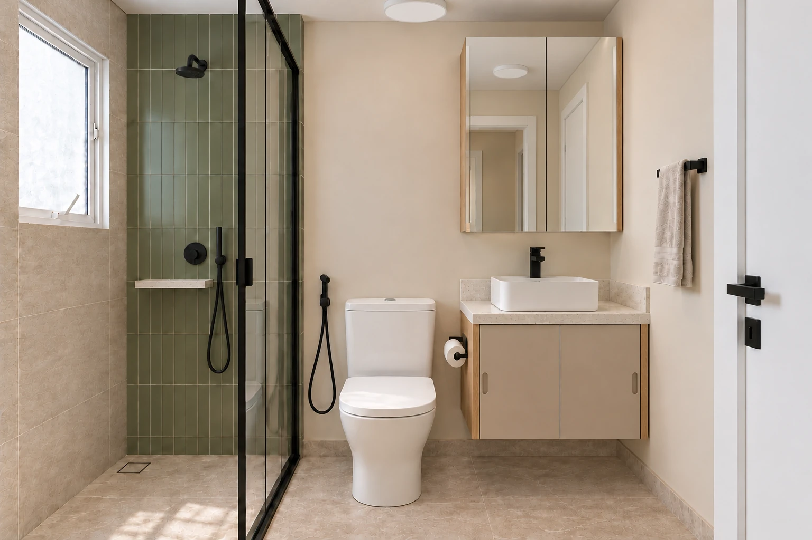
Beige Matt e Freijó; Sauge no chuveiro e na janela do box.
Teto e indireta 3000 K; espelho 4000 K, três comandos.